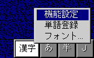

The instance of the default Status Part Class is an object window which sends IME related messages to the global shift status window and the global mode status window, which are shared by all IM instances in the system. Those windows are owned by the firs t IME Window which needs the default status windows. Shift status window consists of some buttons which are related to the state of the ulInputMode member of IMInstance. Mode status window is a simple text window with some attributes. Usually this window is used to display the IME Modes(e.g. 'Kanji' string in Japanese). Shift status window and Mode status window are created with WS_DISABLED style, because these window does not need focus and not needed to be switched to. And they also respond to WM_HITTES T message with the return code of HT_NORMAL to handle mouse events. Following is a snap of the Shift status window and Mode status window for Japan.
If the user clicks mouse right button on either of Shift status or Mode status window, a popup menu appears as above. Top menu item is for IME Set-up dialog which actually calls ImShowIMEDlg(IME_DLG_CONFIG). Next menu item is for RegisterWord which actual ly calls ImShowIMEDlg(IME_DLG_REGWORD). Bottom menu item is for setting fonts which is used in both of Shift status and Mode status windows. The default position of the status windows are bottom-right of the screen.
The shift status window can have 8 buttons as maximum, which can be defined
in its resource file.
WM_IMEREQUEST
IMR_INSTANCEACTIVATE
Shows the Shift status window with appropriate input mode display. Mode
status window is shown if the control data is specified by WM_SETWINDOWPARAMS.
IMR_STATUS
Changes the appearance according to the modification of the status part in IMInstance. When the input mode is changed, Shift status window and Mode status window are brought to top in Z-Order.